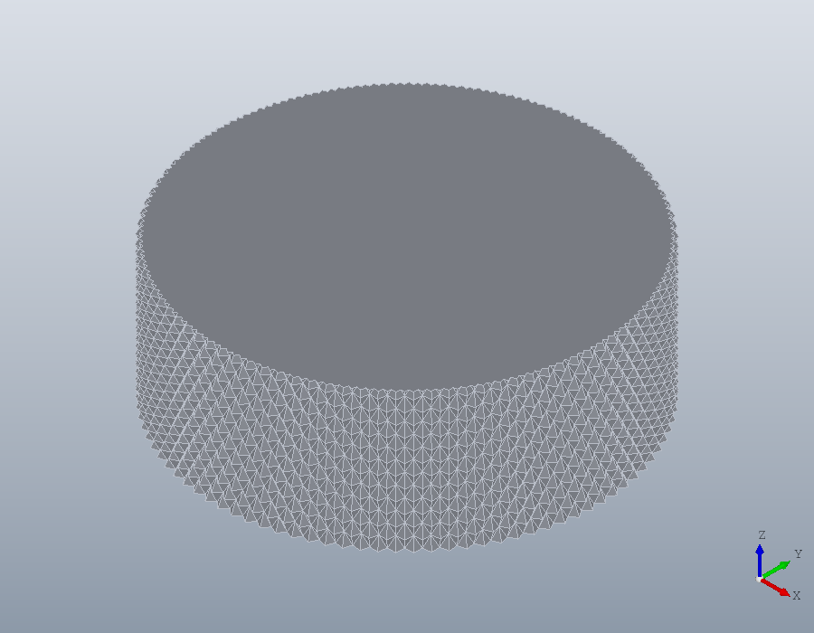
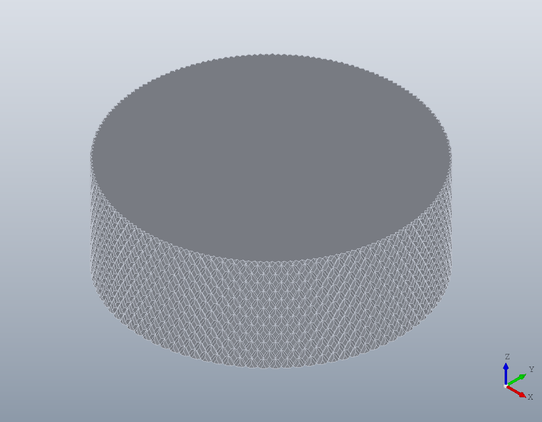
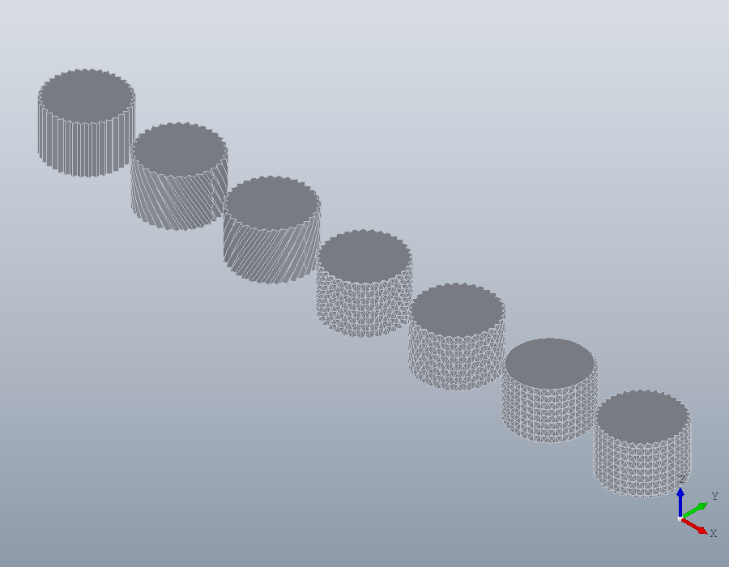
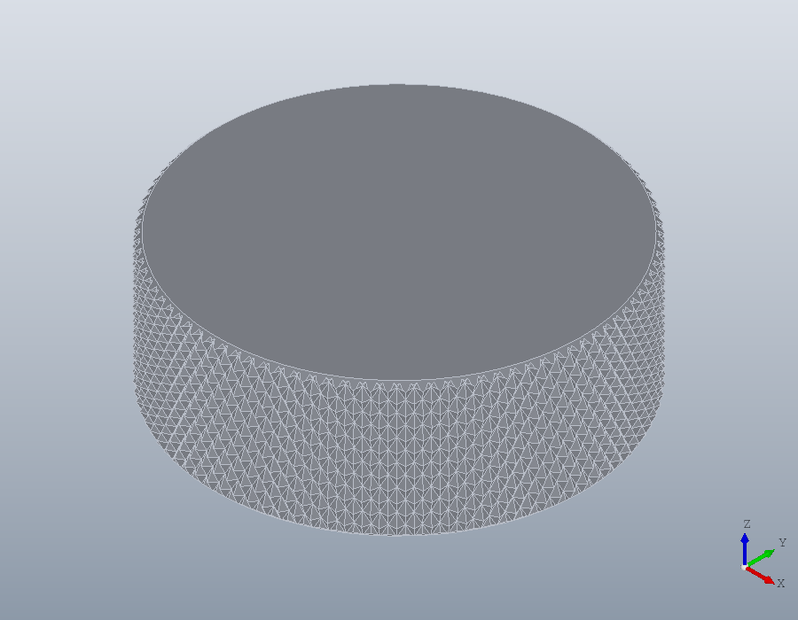
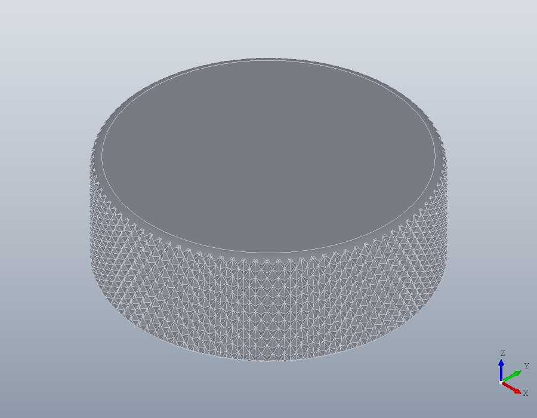
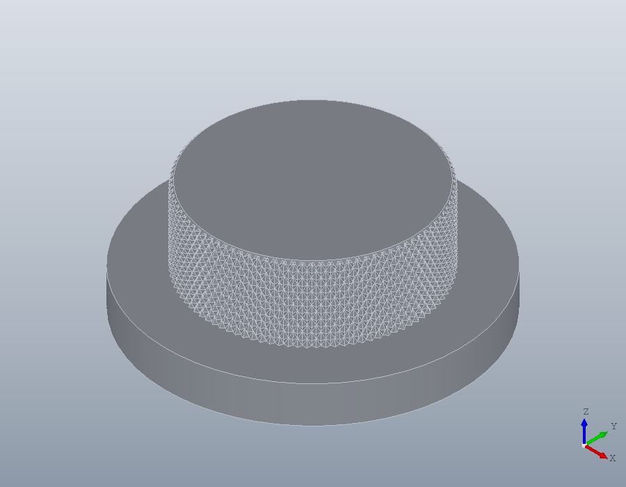
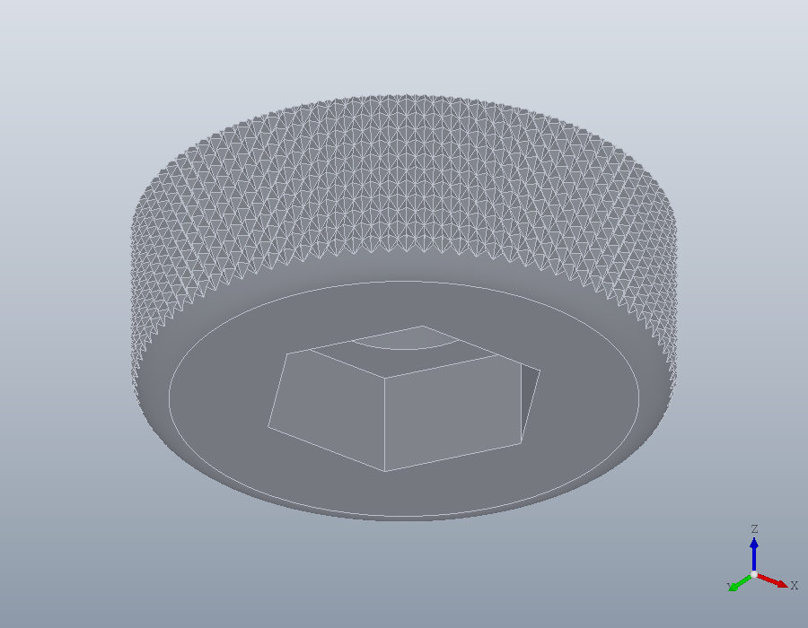

Knurling
A knurl gives a turned part its grip: a knob, a thumb screw, the nut that holds a cover down. knurl knurls a cylindrical face with any of the seven types of DIN 82, at any pitch, and finishes its ends with a fillet or a chamfer. Where each number comes from is set out on the standards page Knurls.
A knurled knob
A knob 28 across and 10 high takes the default knurl, RGE: two sets of grooves at 30 degrees either side of the axis, teeth of 90 degrees cut to a point, leaving raised points. The face to knurl is picked by its type, as for fillet, and the pitch is 0.8, one of the pitches DIN 82 lists.
knob = solid.cylinder (14, 10);
F = faces (knob, 'Type', 'cylinder')
knob = knurl (knob, F, 0.8);
show (knob);F = 1
The pitch round the face
The pitch is measured square to the grooves, as DIN 82 gives it. A whole number of grooves must go round the face, so the pitch is fitted to the nearest that gives one. At 30 degrees from the axis the knob takes 95 grooves each way, a little coarser than 0.8.
n = round (pi * 28 * cosd (30) / 0.8)
p = pi * 28 * cosd (30) / nn = 95
p = 0.8019By default the grooves are cut to full depth, where the flanks of two grooves meet in a point: half the pitch as fitted, for teeth of 90 degrees.
full = p / 2full = 0.4009A shallower DEPTH leaves flat lands at the diameter of the knob between the grooves. A deeper one is refused, since the teeth would have to overlap.
lands = knurl (solid.cylinder (14, 10), F, 0.8, 0.2);
show (lands);
knurl (solid.cylinder (14, 10), F, 0.8, 0.5);solid.Shape.knurl: DEPTH must be no more than 0.4009, the full depth of the teeth at the pitch fitted round F.
The seven types
DIN 82 names seven knurls, each made by options of knurl:
- RAA, straight grooves along the axis:
'Pattern', 'single', 'Angle', 0. - RBL, left-hand:
'Pattern', 'single', 'Angle', -30. - RBR, right-hand:
'Pattern', 'single'. - RGE, left-hand and right-hand, points raised: the default.
- RGV, left-hand and right-hand, points indented:
'Points', 'indented'. - RKE, cross knurl, points raised:
'Angle', [0, 90]. - RKV, cross knurl, points indented:
'Angle', [0, 90], 'Points', 'indented'.
A positive angle runs right-handed, as a thread does, so RBL is RBR seen in a mirror. Seven small knobs in a row, one of each from left to right, are held in an assembly, which shows them side by side without joining them. The side of a cylinder is its face 1, as above.
types = {{'Pattern', 'single', 'Angle', 0}, ...
{'Pattern', 'single', 'Angle', -30}, ...
{'Pattern', 'single'}, ...
{}, ...
{'Points', 'indented'}, ...
{'Angle', [0, 90]}, ...
{'Angle', [0, 90], 'Points', 'indented'}};
names = {'RAA', 'RBL', 'RBR', 'RGE', 'RGV', 'RKE', 'RKV'};
row = model.Assembly ('knurls');
for k = 1:7
S = knurl (solid.cylinder (6, 8), 1, 1, types{k}{:});
row = add (row, names{k}, S, geom.UCS ([0, 0, 1], [16 * (k - 1), 0, 0]));
endfor
show (row);
Finishing the ends
A knurl is chamfered or rounded at a free end, so that it does not end in a ring of sharp points. One size chamfers or rounds every free end of the face.
knob = knurl (solid.cylinder (14, 10), F, 0.8, 'Chamfer', 0.5);
show (knob);
A cell array names the end each size goes to, by the edge at that end, picked as for chamfer: here the top is rounded 1 and the bottom chamfered 0.5. Each end takes one or the other.
blank = solid.cylinder (14, 10);
top = edges (blank, 'Type', 'circle', 'Within', [-15, -15, 10, 15, 15, 10])
bottom = edges (blank, 'Type', 'circle', 'Within', [-15, -15, 0, 15, 15, 0])
knob = knurl (blank, F, 0.8, 'Fillet', {top, 1}, 'Chamfer', {bottom, 0.5});
show (knob);top = 1
bottom = 3
An end named by its edge is treated first, and a single size for the other option takes the free end that is left, so this knob is the same.
same = knurl (blank, F, 0.8, 'Fillet', 1, 'Chamfer', {bottom, 0.5});
volume (same) - volume (knob)ans = 0Up to a shoulder
A knurl that runs up to a shoulder ends at the shoulder's face, and that end can be neither rounded nor chamfered. A single size leaves it as it is and treats the free end only; naming the shoulder's edge is refused.
shaft = union (solid.cylinder (20, 5, geom.UCS ([0, 0, 1], [0, 0, -5])), ...
solid.cylinder (14, 10));
G = faces (shaft, 'Type', 'cylinder', 'Within', [-15, -15, 0, 15, 15, 10])
shoulder = edges (shaft, 'Type', 'circle', 'Within', [-15, -15, 0, 15, 15, 0]);
knurl (shaft, G, 0.8, 'Chamfer', {shoulder, 0.5});
shaft = knurl (shaft, G, 0.8, 'Chamfer', 0.5);
show (shaft);G = 4
solid.Shape.knurl: edge 4 is where F meets a shoulder, so it cannot be filleted or chamfered.
Knurl last
A knurl adds thousands of faces, and every later boolean has to cut through them, so a part is knurled after its other features. This knob takes an M8 screw from below: a clearance hole right through and a hexagon pocket for the screw's head, then the knurl, rounded 2 at the bottom.
knob = solid.cylinder (14, 10);
knob = hole (knob, [0, 0, 10], 'M8', Inf, 'Clearance', 'medium');
R = geom.Region (13 / sqrt (3) * [cosd(0:60:300)', sind(0:60:300)']);
R.UCS = geom.UCS ([0, 0, -1], [0, 0, 0]);
knob = pocket (knob, R, 5.5);
F = faces (knob, 'Type', 'cylinder', 'Within', [-15, -15, 0, 15, 15, 10]);
F = F(! ismember (F, faces (knob, 'Within', [-8, -8, 0, 8, 8, 10])))
bottom = edges (knob, 'Type', 'circle', 'Within', [-15, -15, 0, 15, 15, 0]);
bottom = bottom(! ismember (bottom, ...
edges (knob, 'Within', [-8, -8, 0, 8, 8, 0])))
knob = knurl (knob, F, 0.8, 'Fillet', {bottom, 2});F = 1
bottom = 3Seen from below, the pocket and the fillet face the reader.
V = show (knob);
view (V, -37.5, -30);
The blank to turn
The model is the finished knurl, its points at the diameter of the face, which is the nominal diameter of DIN 82, the one a drawing states. Knurling presses the material up out of the grooves, so the machinist turns the blank smaller before knurling: for RGE, by two thirds of the pitch. The knurled knob holds the volume of that blank, to a few thousandths of a millimetre.
blank = 28 - 0.67 * 0.8
band = knurl (solid.cylinder (14, 10), 1, 0.8);
2 * sqrt (volume (band) / (pi * 10))blank = 27.464
ans = 27.466What cannot be knurled
The face must be the outside of the part, all the way round its axis, and each of its ends must meet a flat face square to the axis. A bore is refused, and so is a face whose end was rounded before knurling: the fillet belongs to the knurl, given with 'Fillet'.
ring = hole (solid.cylinder (14, 10), [0, 0, 10], 8, Inf);
bore = faces (ring, 'Type', 'cylinder', 'Within', [-5, -5, 0, 5, 5, 10]);
knurl (ring, bore, 0.8);
rounded = fillet (solid.cylinder (14, 10), top, 1);
knurl (rounded, faces (rounded, 'Type', 'cylinder'), 0.8);solid.Shape.knurl: F must be an outside face, not a bore.
solid.Shape.knurl: each end of F must meet one flat face square to its axis.